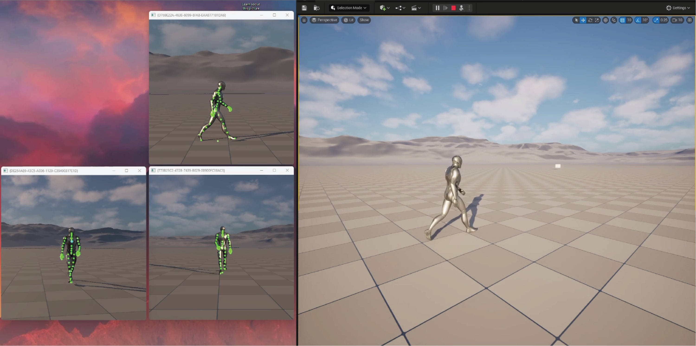
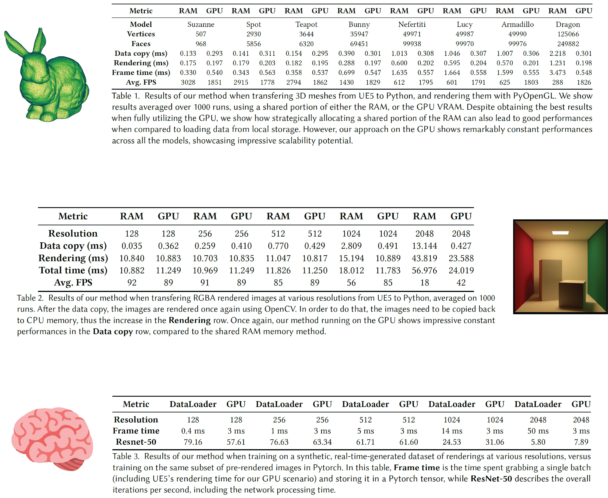

What if data generation, manipulation, and training could all happen entirely on the GPU, without ever touching the RAM or the CPU?
In this work, we present a novel pipeline based on Unreal Engine 5, which allows us to generate, render, and process graphics data entirely on the GPU.
By keeping the data stored in GPU memory throughout all the steps, we bypass the traditional bottlenecks related to CPU-GPU transfers, significantly accelerating data manipulation and enabling fast training of deep learning algorithms.
The typical workflow—(1) build 3D scenes in a game engine, (2) render and write its data to disk, and finally (3) use that static data as input to an algorithm or neural network—suffers from repeated CPU–GPU round-trips and I/O stalls.
The main bottleneck of this approach is usually the storage, which can contain a finite amount of static data, with a reduced access speed from the graphics hardware.
Our contribution is twofold: (i) generating an infinite amount of data in real-time on the GPU, and (ii) consuming it without storing it anywhere, bypassing the delays due to storage access.
Multi-camera sharing of images and character rig.
Real-time rendering and sharing of a complex scenario.
Quantitative results on three separate tasks, averaged over 1000 iterations.
@inproceedings{10.1145/3721250.3742983,
author = {Della Pietra, Daniele and Lanzo Hahn, Gino and Garau, Nicola},
title = {To Infinity and Beyond: a GPU-driven memory sharing pipeline to generate and process infinite synthetic data},
year = {2025},
isbn = {9798400715495},
publisher = {Association for Computing Machinery},
address = {New York, NY, USA},
url = {https://doi.org/10.1145/3721250.3742983},
doi = {10.1145/3721250.3742983},
abstract = {What if data generation, manipulation, and training could all happen entirely on the GPU, without ever touching the RAM or the CPU? In this work, we present a novel pipeline based on Unreal Engine 5, which allows us to generate, render, and process graphics data entirely on the GPU. By keeping the data stored in GPU memory throughout all the steps, we bypass the traditional bottlenecks related to CPU-GPU transfers, significantly accelerating data manipulation and enabling fast training of deep learning algorithms. Traditional storage systems impose latency and capacity limitations, which become increasingly problematic as data volume increases. Our method demonstrates substantial performance improvements on multiple benchmarks, offering a new paradigm for integrating game engines with data-driven applications.},
booktitle = {ACM SIGGRAPH 2025 Posters},
articleno = {17},
numpages = {2},
keywords = {Facial Animation, Multi-modal, Rigging},
location = {Vancouver, BC, Canada},
series = {SIGGRAPH '25}
}